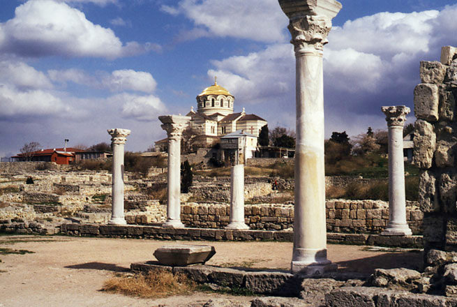

Херсонес Таврійський
Історія Херсонеса є частиною історії Давньої Греції, Давнього Риму, Візантії, Київської Русі. Адже саме тут, у Херсонесі, згідно з літописними даними, відбулося велике Таїнство – Хрещення Київського князя Володимира, який потім поширив християнство на всю Київську Русь…
Херсонес Таврійський – таку назву носило місто, засноване давньогрецькими колоністами понад дві з половиною тисячі років тому на південному заході Кримського півострова.
Слово „Херсонес” зазвичай перекладають з грецької як „півострів”. Місто дійсно було розташоване на невеличкому півострові поміж двох бухт. Таври – войовниче плем’я, що заселяло сусідні гористі місцевості, – спричинили народження епітету „Таврійський”, тобто „розташований на території таврів”.
Територія сучасного заповідника охоплює межі стародавнього грецького міста – Херсонеса Таврійського, що виникло тут, на узбережжі Чорного моря, у V ст. до н.е. Місто було огороджене могутніми оборонними стінами і розплановане за схемою, поширеною тоді у грецькому та римському світах. До наших днів збереглося багато давніх споруд. Серед них – елліністичний театр, римська цитадель, середньовічні християнські храми, житлові квартали, вулиці, гончарні майстерні, обладнання для засолювання риби, колодязі тощо.
У кінці XIV ст. навала кочівників поклала кінець існуванню міста, а його руїни поховала земля. Лише у 1827 р. тут розпочалися розкопки, які майже відразу принесли Херсонесу ще одну назву – „Руська Троя”. Масштаб досліджень та велика кількість археологічних пам’яток, що потребують збереження, спонукали до створення Національного заповідника „Херсонес Таврійський”.
Територія Херсонеса досліджується археологами уже 180 років. За цей час відкрито понад третину міста. Серед археологічних знахідок є унікальні – присяга громадян Херсонеса ІІІ ст. до н.е., декрети, фрески, мозаїки, шиферні ікони християнських храмів, написи-присвяти, численні побутові предмети. Загалом музейні зібрання заповідника нараховують понад 200 тисяч експонатів.
Згідно з літописом „Повість временних літ”, у 988 р. Київський князь Володимир, здійснивши напад на Херсонес, примусив Візантію видати за нього заміж царівну Анну, а потім хрестився та вінчався з нею. При цьому охрестилась і дружина (військо) князя. Після цього князь Володимир з Анною, дружиною і грецьким духовенством прибув до Києва, де того ж 988 р. відбулося славнозвісне хрещення киян у річці Дніпро.
На місці руїн хрещальні князя Володимира у 1861 р. було закладено собор в ім’я Хрестителя Русі. Нині Володимирський собор у Херсонесі реконструйований та є символом Хрещення Русі.
Сьогодні Ви зможете провести у заповіднику цілий день, розглядаючи численні експонати або просто насолоджуючись прогулянкою по території стародавнього городища. Можна здійснити й віртуальну екскурсію, скориставшись картою, на якій позначені розкопані ділянки міської території. А ті, хто особисто бажає взяти участь у розкопках, можуть зробити це, попередньо домовившись з адміністрацією.
На замітку Місто Севастополь розташоване на південному заході Кримського півострова, на узбережжі численних (понад 30) бухт Чорного моря. Севастополь – один із 27 адміністративних регіонів України. Відстань від Києва – 935 км.
Довідково> Адреса: 99045 Крим, м. Севастополь, вул. Древня, 1. Тел.: (0692) 24-13-01. Години роботи у літній період – з 9:00 до 20:00, у зимовий – з 9:00 до 17:00. Без вихідних (окрім 1 січня).